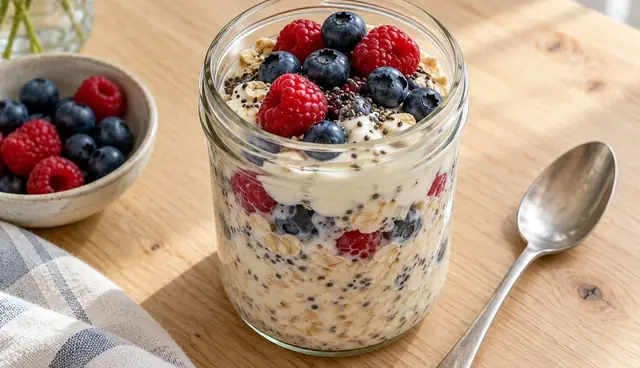

Frühstück · vegetarisch
Beeren-Overnight-Oats mit Chia
Abends zwei Minuten, morgens sofort fertig: cremige Haferflocken mit fruchtigen Beeren.

Nährwerte pro Portion
Eiweiß15 g
Ballaststoffe10 g
Magnesium106 mg
Vitamin C38 mg
Zutaten für 2 Portionen
- 100 g Haferflocken
- 200 g Naturjoghurt
- 150 ml Milch
- 150 g Beeren, frisch oder tiefgekühlt
- 1 EL Chiasamen
- ½ TL Zimt
Enthält: Gluten, Milch. Nährwerte berechnet mit dem Bundeslebensmittelschlüssel (BLS 4.0), 350 kcal · 40 g Kohlenhydrate · 11 g Fett pro Portion.
Zubereitung
- Haferflocken, Joghurt, Milch, Chiasamen und Zimt in einer Schüssel verrühren.
- Auf zwei verschließbare Gläser verteilen und abgedeckt über Nacht in den Kühlschrank stellen.
- Morgens die Beeren daraufgeben. Tiefgekühlte Beeren am Vorabend schon mit ins Glas geben, dann tauen sie über Nacht auf.
In zwei Gläsern vorbereitet hält sich das Frühstück zwei Tage im Kühlschrank. Sind die Haferflocken zu fest, einen Schluck Milch unterrühren.
Mehr aus der App
Dieses Rezept stammt aus der WellANNI-App. Dort findest du über 200 geprüfte Rezepte, planst deine Woche für den ganzen Haushalt samt Einkaufsliste und siehst, was dein Teller schon geliefert hat.
WellANNI App holenPassende Kollektion: Echtes Essen